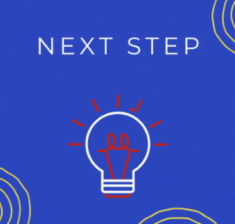
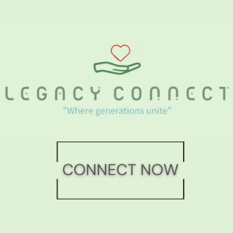

Next Step!
This project was a part of the Pencil-Infosys Infy App challenge. Our app is a comprehensive platform designed to help high school students plan for their futures. Next Step is there to help students find certain opportunities for what they might want to do after high school, allow students to fill out a survey for things they're interested in, in order to give them appropriate options for what they want to do. This competition was really fun to participate in. We got to learn so much through our mentors who helped us each week, and weekly delverables that helped us keep track on our progress.

Legacy Connect
Our with this app is to Create a community where users from different generations can connect and build relationships based on mutual interests and goals. And to encourage mentorship and learning to provide a platform for seniors to share their life experiences and knowledge, while younger users can offer fresh perspectives and skills, particularly in technology.